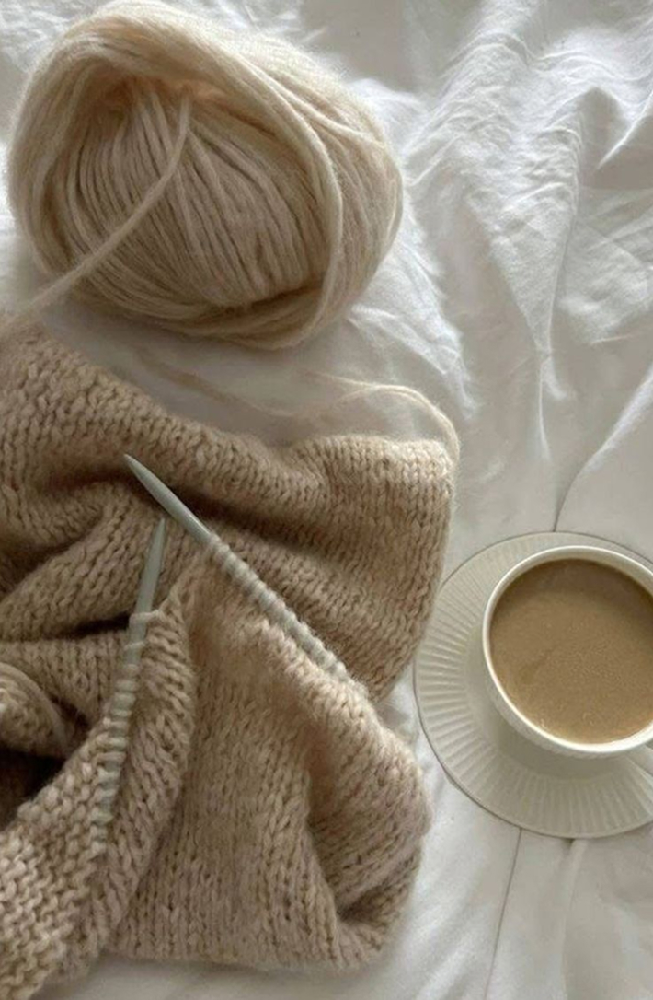
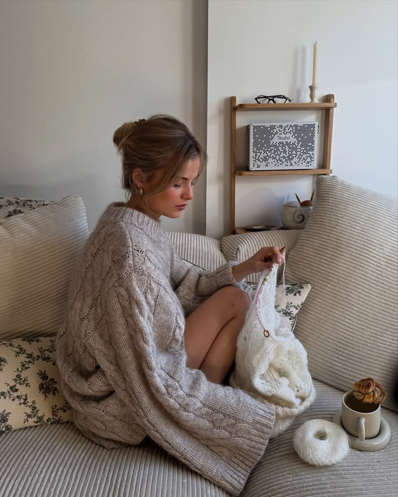

Første skridt
Det skal du bruge
Garn, hæklenål og få simple materialer er alt, du behøver for at komme i gang.
Se materialer →Start din nye hobby ♡
En rolig og enkel guide til dig, der gerne vil lære at hækle. Få styr på det vigtigste, lær dine første masker og kom i gang med dit første lille projekt.
Kom i gang →
Det er lettere end du tror ♡
Første skridt
Garn, hæklenål og få simple materialer er alt, du behøver for at komme i gang.
Se materialer →Helt fra bunden
Start med de mest grundlæggende masker og lær dem i dit eget tempo.
Lær maskerne →Du er klar ♡
Brug det, du lige har lært, og lav dit første lille hækleprojekt fra start til slut.
Start projektet →
En pause fra hverdagen ♡
Hækling handler ikke kun om det, du laver. Det kan også være en hyggelig pause fra skærmen og en rolig aktivitet, hvor du kan fordybe dig i dit eget tempo.
Start din nye hobby →Din første maske venter ♡
Du behøver ikke kunne noget på forhånd. Vi tager det sammen trin for trin.
Kom i gang →